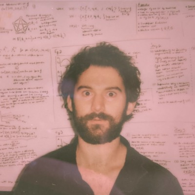

|
I am a Ph.D. student in Public Policy at Georgia Institute of Technology. I am advised by Cassidy Sugimoto and John Walsh. I am a long-term visiting student in the Interaction Data Lab run by Marc Santolini (LPI/INSERM/Université Paris Cité). I was recently a visiting student at Stanford University with Megan Palmer. Before starting my Ph.D., I earned a B.S. in Molecular Genetics and M.P.A. from The Ohio State University where I worked at the Battelle Center for Science, Engineering and Public Policy. Email / CV / Google Scholar / Twitter / Github |
 |
{kind=link}
|
My research is broadly about information, organization, and innovation. On the production side, I am interested in the origins and consequences of structure within groups that have the right to organize themselves. My work here tries to understand mechanisms and design interventions that retain the benefits of autonomy while guiding groups toward innovation enhancing structure. On the other side I consider the reception of new ideas. There I study how the historical organization of science and limits on human cognition determine which ideas get taken up and which become forgotten. |

|
Chakresh Singh, Emma Barme, Robert Ward, Liubov Tupikina, Marc Santolini PLoS ONE 17(6), 2022 Introduces a method to project the evolution of many scientific fields onto the same temporal and population scale. |